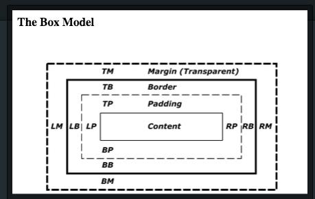

Devesh Patel
Learning CSS
The Box Model
June 20, 2015
The box model is integral part of elements in CSS positioning. It consists of the content, padding, border, and margin. Each is a nested box allowing fine tuning of positioning an element's content. First you have the content element, such as a paragraph. This is surrounded by a padding box which you can change the dimensions to provide a cushion for the content or add color attributes. Wrapping this is a border box which you can also change the dimensions of and provide a colored border to outline the content and padding. Finally the margin box, which is transparent, allows you to position the element in relation to other elements.
For each box element there is a top, right, bottom, and left property that can be set to determine the length you want the box to take. Take for example the following css:
margin: 10px, 10px, 10px, 10px;
The margin in clockwise fashion (12, 3, 6, 9) will set the transparent margin buffer to be 10px on all sides. The same example would work for padding as well, but would provide 10px of space around the content as a cushion. Below is a diagram of the box model showing how it is nested.
